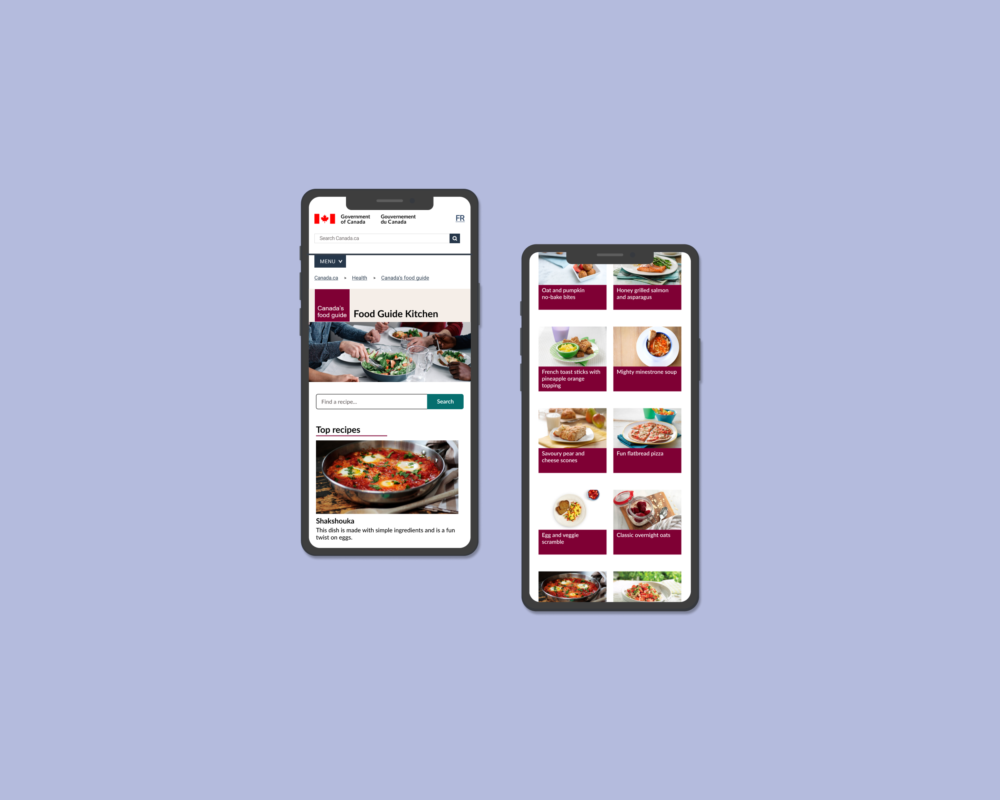
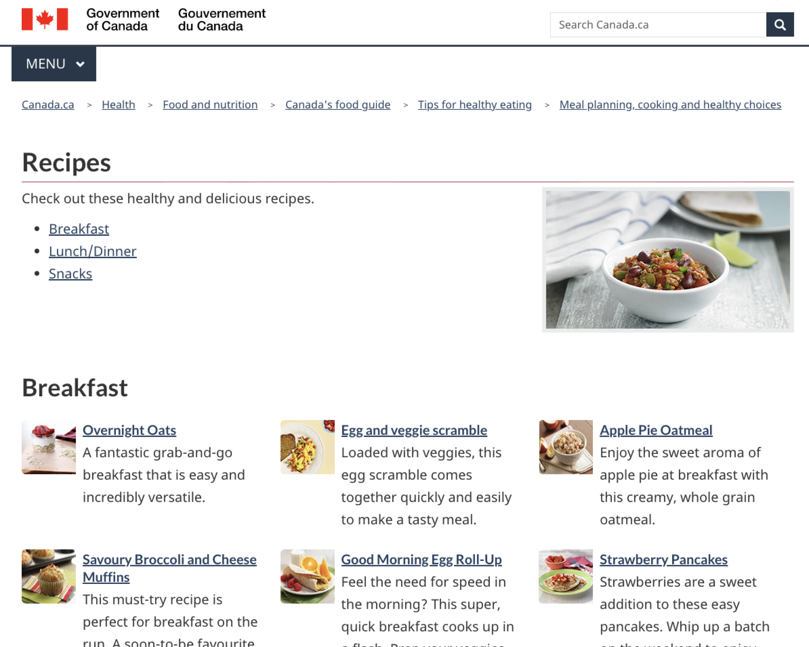
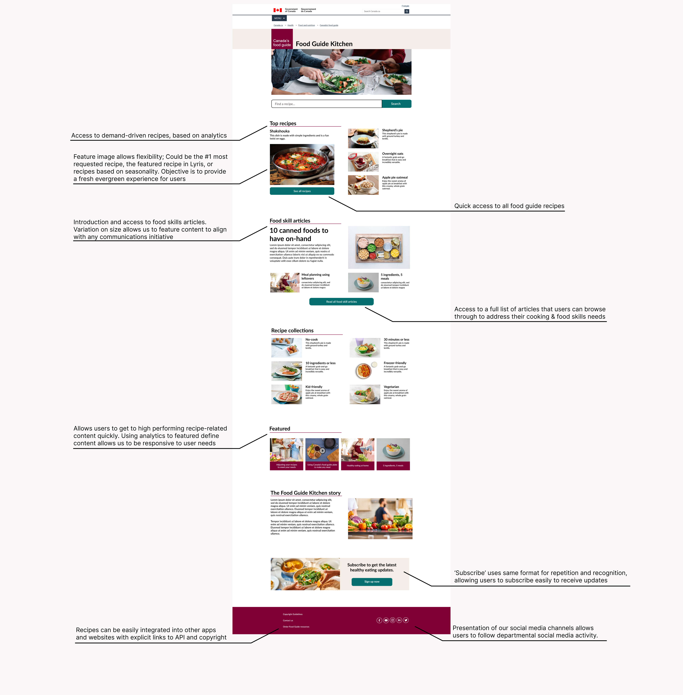
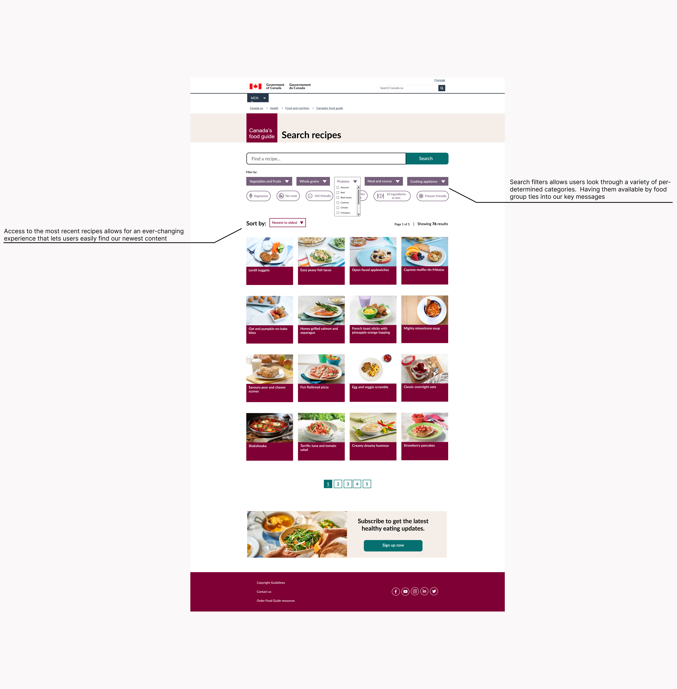
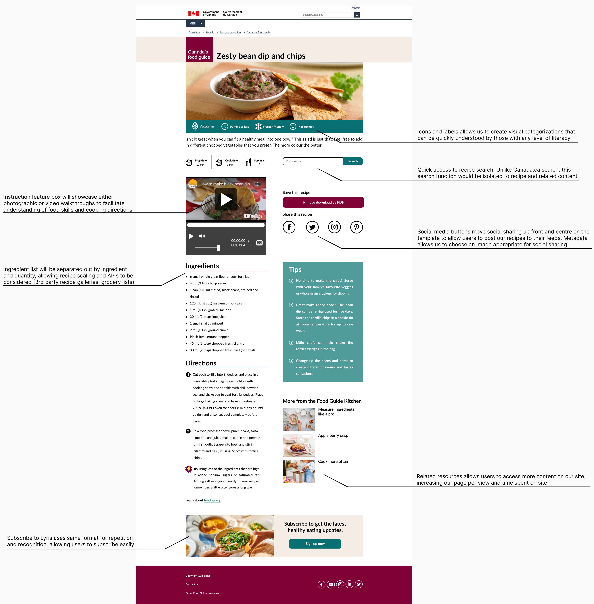

Canada’s Food Guide is a nutrition guide produced by Health Canada which aims to help people follow a
healthy diet, and
is the second most requested Canadian government publication. The goal of the Recipe Gallery is to help
users implement
this guidance by illustrating and encouraging Canadians to learn and develop food skills, make healthier
food choices,
and eat meals which meet dietary guidance.
As the primary designer, I was tasked with redesigning the Recipe Gallery on their website. Issues with the
previous
gallery
included lack of branding, basic expected usability functions, and links to other related content.
Furthermore, the
recipes were not searchable, easily navigable or categorized in a user-friendly manner.

Increase usability to enhance the uptake of Canada’s Food Guide guidance.
Note: You can now see the Recipe Gallery I designed live at food-guide.canada.ca/en/kitchen


